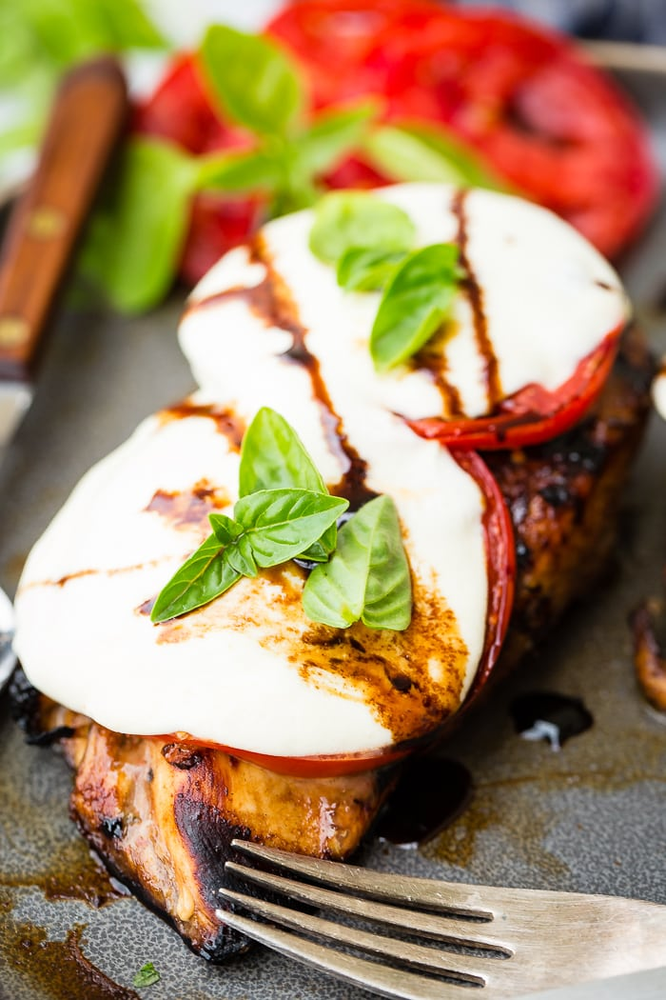
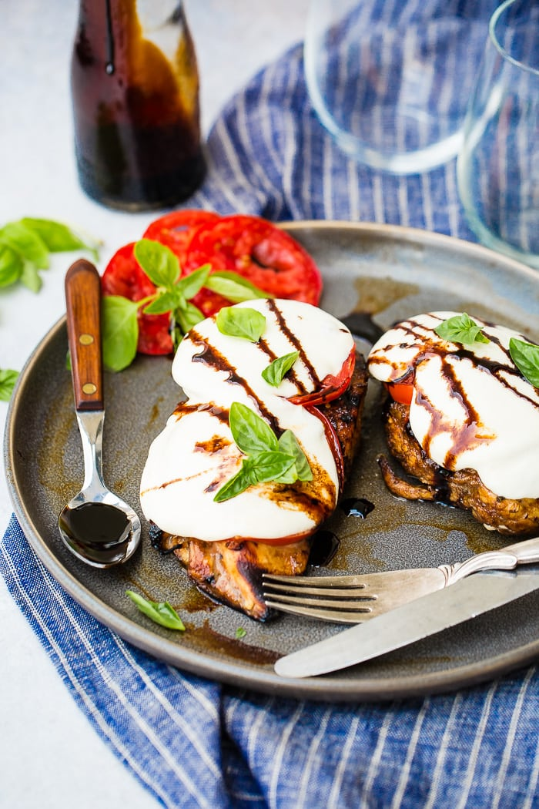
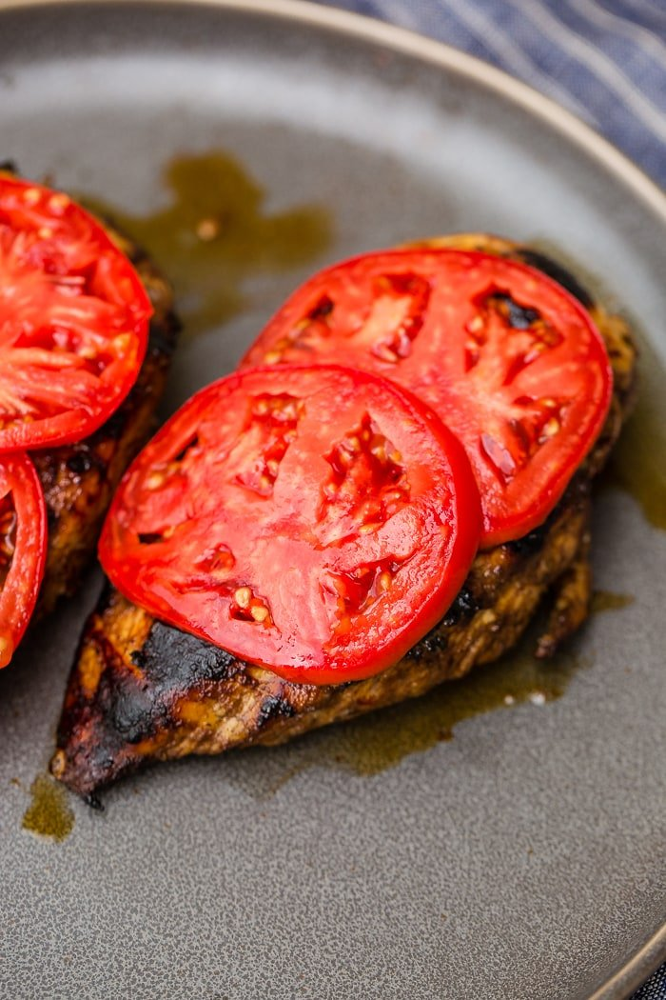
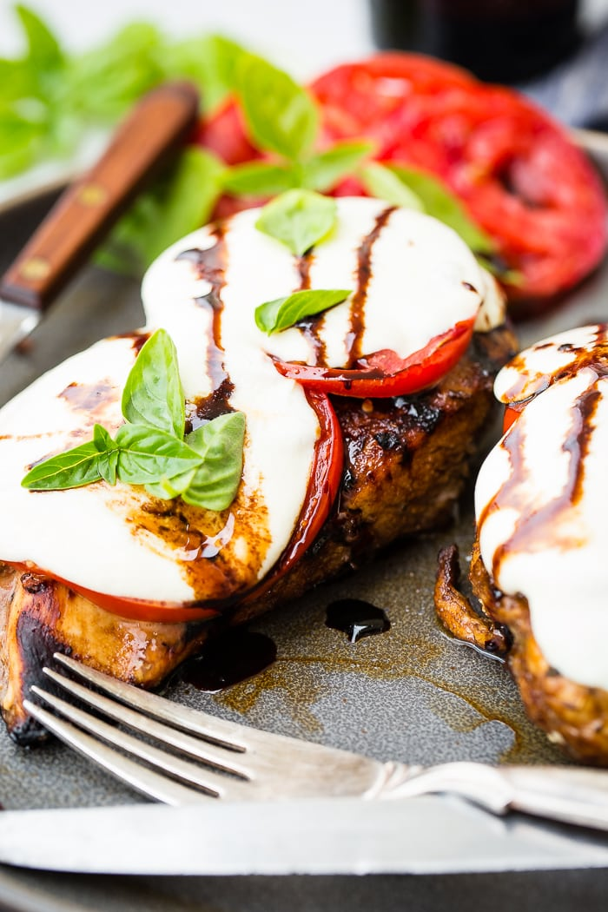
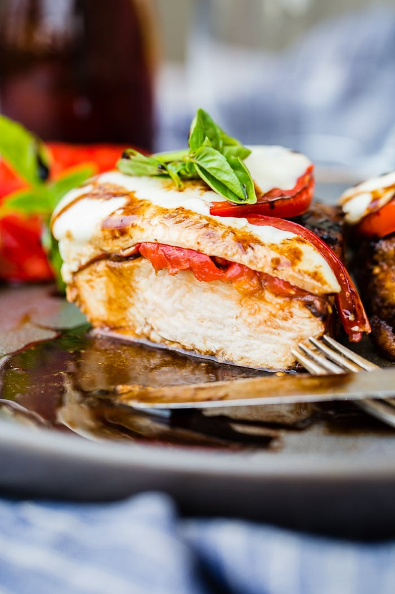

Balsamic Caprese Chicken
Prep Time:1 hour
Cook Time:14 mins
Total Time: 1 hour 14 mins
Yield: 4 servings
Ingredients
Marinade
Balsamic Reduction
Steps
- In a ziploc bag, combine the oil, vinegar, garlic, basil, sugar, salt and pepper.
- Add the chicken, pressing out the air and sealing.
- Place in the refrigerator for 1 hour.
- Meanwhile, prepare the balsamic reduction
- In a high lipped skillet, over medium high heat, add the vinegar and sugar. Bring to a boil and then turn down to a simmer.
- Simmer for 10-15 minutes and remove from the heat to cool and thicken.
- Remove the chicken from the fridge.
- Heat a grill to medium high heat or heat the oven to 350.
- Place the chicken on the grill and turn down to medium heat. Cook for 6-7 minutes per side.
- In the oven method, merely put the chicken in a pan and cook for 30 minutes.
- Remove the chicken and top with two slices of tomato per breast and mozzarella cheese.
- Place under a broiler until melted.
- Remove the chicken to a place and drizzle with the balsamic reduction and sprinkle with basil, as well as a crack of black pepper if desired.
Notes
- Left overs should be kept in the refrigerator.
Gallery



